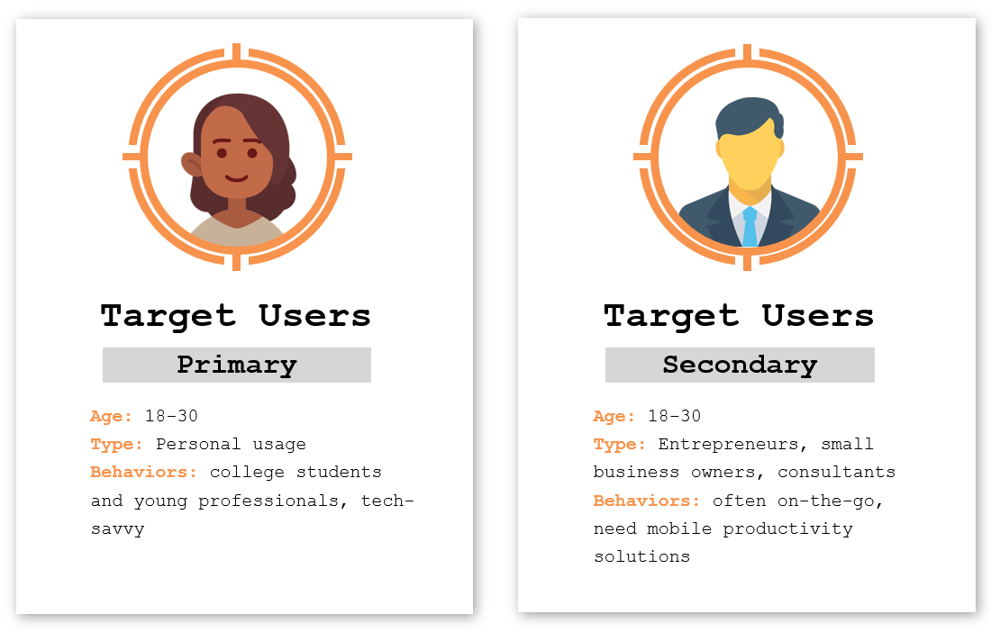

Everything you need to manage your life easily and efficiently, all on one app.

Personal project

2022-2023
Tools:


Life is complicated! Between all our responsibilities, events, tasks and thoughts, it's not fair to ask our brains to remember and manage everything. Many consumers today rely on multiple productivity apps to manage their daily lives. I personally have separate tools for calendars, to-do lists, general lists, quick personal notes, more organized notes, and planning, on top of the team-based tools used at work. Hours are wasted each week switching between these different products, syncing through various platforms, and often losing valuable information along the way. For tools that are supposed to make life more efficient, they sure seem inefficient. Born out of this frustruation, Faire is the product that ties it all together. A seamless combination of calendars, lists, notes, and more to manage all aspects of our lives.
Current productivity apps usually focus on just one thing: calendars, to-do lists, or notes, but rarely all three. The few apps that try to provide comprehensive tools are still clearly optimized for one purpose. As a result, we're left to rely on different apps for each purpose. Furthermore, most productivity platforms are web-centric, with mobile experiences that are either challenging to navigate or overly simplified to the point of being impractical. However, for someone like me who is often on the go with just my phone, a robust mobile experience is essential. Faire perfectly fills this market gap - the single source for individual productivity management, optimized for mobile.
What can you do on Faire?
Manage your calendar with daily, weekly, monthly, and planning views
Color-code your events for better organization
Create habit-tracking events to make time for yourself in your daily schedule
Integrate your to-do list with your Calendar to get a holistic breakdown of your day
Label and color-code your tasks for better organization
Create custom to-do lists for all your needs and projects
Create notes to keep track of any thoughts and ideas
Organize notes into folders for better organization
Tag your notes to calendar events so you can easily find your notes when you need them
...And so much more :)
Daily Calendar
The only tool you'll need to manage your entire day. See all your events, habit trackers, and to-do items for the day in one place. Easily track your obligations with color-coded events, mark your habit tracking activities, and check off your tasks for the day.
Planning Calendar
The simplest way to keep track of all your upcoming plans, habits, and tasks. The screen space is optimized to let you preview as much of your life as possible, in a clean and simple experience.
Lists
A default Task list to keep track of all your to-do items. This task list automatically integrates with the calendar views, as seen above. Assign due dates to your tasks to see them appear in the appropriate calendar locations. Organize your items with labels to easily separate different projects. Create additional lists for all your other projects and needs when you don't want them to clutter your calendar views.
Notes
Create customizable notes with different font options, drawing tools, tables, to-do lists, and photos. Organize your notes into folders for easier management. Tag your notes to calendar events to access them from the events themselves.